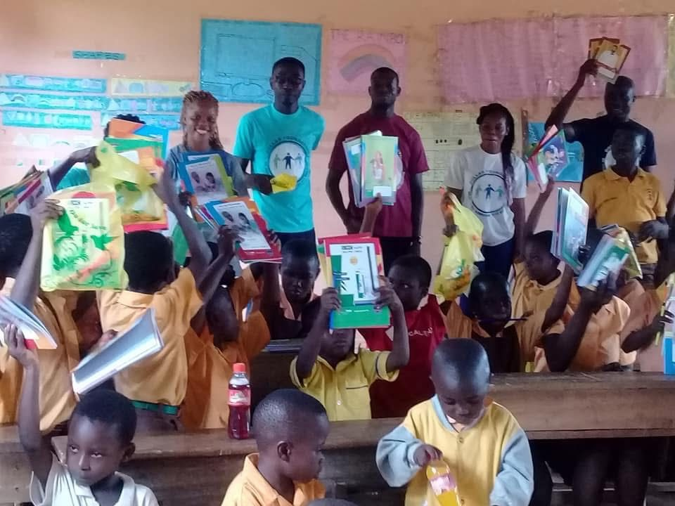
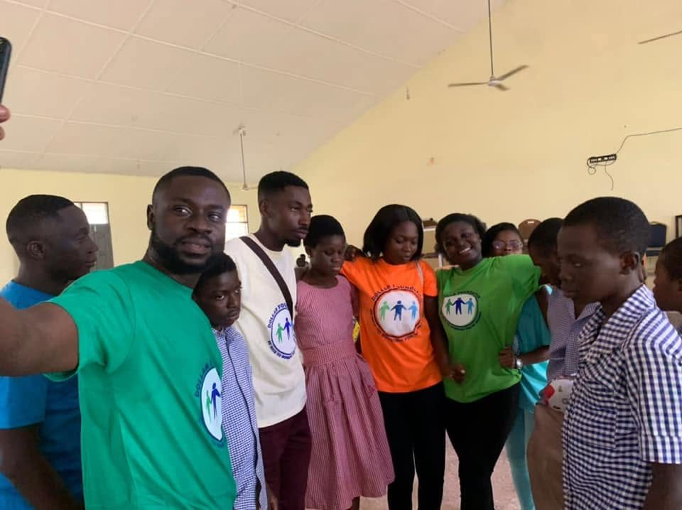

Orphans
Visits, provisions and encouragement for children who have lost their parents.
Two kinds of work: a helping hand for people going through hard times, and mentorship that walks with students as they grow.
Visits, provisions and encouragement for children who have lost their parents.
Help for children whose families are struggling to give them the basics.
Care and company for older people in our community, who have given so much already.
A helping hand for widows, many of whom are raising families alone.
Support for talented students so that money isn’t the reason they fall behind.
Volunteers take books, pens, pencils, water, drinks, clothing, shoes, bags and slippers to schools and communities.

Talent is everywhere; guidance isn’t. Our mentorship programmes pair students with people who can encourage them, answer their questions and help them see what’s possible.
